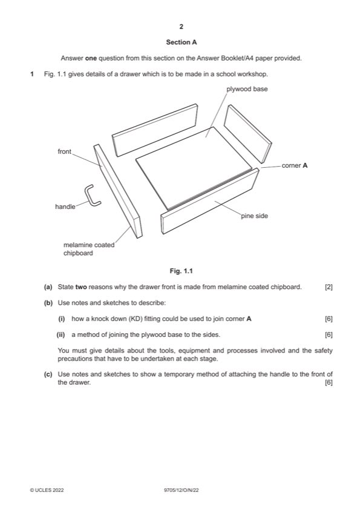

Question 1

Original paper page 2
Part 1(a) — solution
Exemplar answers: 2 AOVR including:
Provides a smooth surface [1] • Hygienic
Available in a wide range of colours/patterns [1] • Hardwearing
0–2
Mark points
- Include the ideas shown in the solution above.
Part 1(b)(i) — solution
Sketches and notes show: 6 Other suitable joints:
Suitable method e.g. cam fitting [0–3] • plastic blocks
Tools, equipment or processes [0–2] • screw fittings
Safety precautions [0–1] • If not a KD joint then can still award Tools/equip/safety
0–6
Mark points
- Include the ideas shown in the solution above.
Part 1(b)(ii) — solution
- Dowels
Mark points
- Dowels
Part 1(c) — solution
Sketches and/or notes show: 6 Suitable methods include:
Method attaches handle to drawer front [2] • Machine screws
In a temporary fashion [2] • Nuts and bolts
Tools used (2)
0–6
2022 Page 4 of 22
9705/12 Cambridge International AS & A Level – Mark Scheme October/November 2022
Guidance
Mark points
- Include the ideas shown in the solution above.